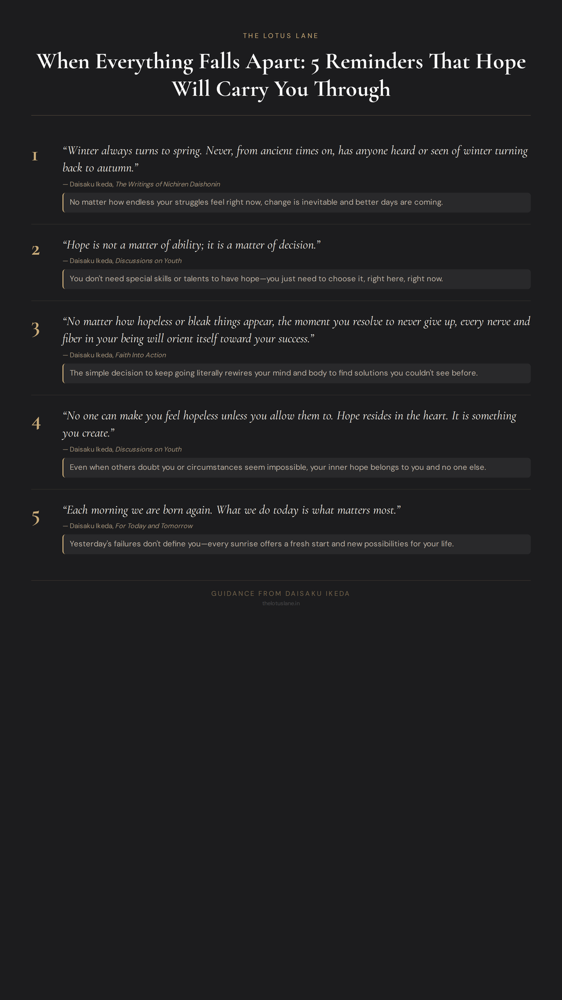

“Winter always turns to spring. Never, from ancient times on, has anyone heard or seen of winter turning back to autumn.”— Daisaku Ikeda, The Writings of Nichiren Daishonin
No matter how endless your struggles feel right now, change is inevitable and better days are coming.
“Hope is not a matter of ability; it is a matter of decision.”— Daisaku Ikeda, Discussions on Youth
You don't need special skills or talents to have hope—you just need to choose it, right here, right now.
“No matter how hopeless or bleak things appear, the moment you resolve to never give up, every nerve and fiber in your being will orient itself toward your success.”— Daisaku Ikeda, Faith Into Action
The simple decision to keep going literally rewires your mind and body to find solutions you couldn't see before.
“No one can make you feel hopeless unless you allow them to. Hope resides in the heart. It is something you create.”— Daisaku Ikeda, Discussions on Youth
Even when others doubt you or circumstances seem impossible, your inner hope belongs to you and no one else.
“Each morning we are born again. What we do today is what matters most.”— Daisaku Ikeda, For Today and Tomorrow
Yesterday's failures don't define you—every sunrise offers a fresh start and new possibilities for your life.
Get daily Buddhist wisdom in your inbox